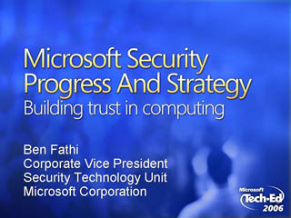
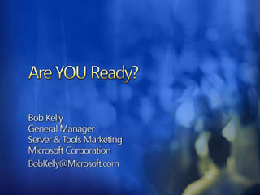

Introducing the 2007 Microsoft Office System: Amplify the Impact of Your People
Speaker(s): Chris Capossella
Advance your Business with IT Solutions
Speaker(s): Steven Guggenheimer
Microsoft Security Progress and Strategy: Building Trust in Computing

Speaker(s): Ben Fathi
Announcing the Windows Live Platform
Speaker(s): Brian Arbogast
Optimize Your Core Infrastructure: Manage Complexity, Achieve Agility, Protect Information and Control Access

Speaker(s): Bob Kelly